5
Creating Symbols
You can quickly create a new symbol by importing (copying) an existing symbol into the symbol editor window and then modifying the imported symbol. If you cannot use an existing symbol—for example, if your schematic requires an electrical or logical function that does not have a corresponding symbol in a Cadence® design library—you either need to create your own symbol using the symbol editor or generate one.
This chapter describes the following topics:
- Setting Grid Options
- Importing Symbols
- Creating New Symbols
- Creating Symbol Cellviews Using Generators
Setting Grid Options
Before you create a symbol, you might want to set the grids in the symbol window to assist you in drawing. If you want to create shapes that are smaller than what the current snap spacing allows, choose a smaller snap spacing.
-
From the view, choose Options – Display.
The Display Options form appears.
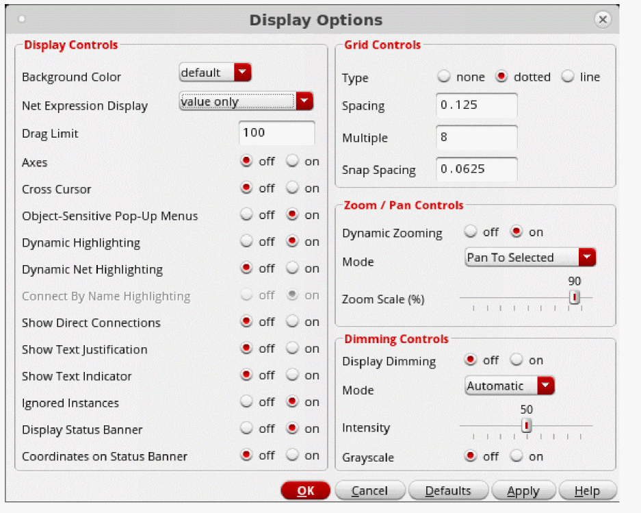 - Set the grid controls according to your specifications.
- Click OK.
Importing Symbols
You can import (copy) an existing symbol into the symbol window. You can then modify the imported symbol and create a new symbol cellview.
-
From the symbol window, choose Create – Import Symbol.
The Import Symbol form appears.
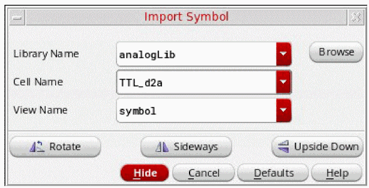 - Specify the symbol (in the Library Name, Cell Name, and View Name fields) you want to copy into the symbol design window.
-
Move the pointer into your design and click to place the symbol.
You can now edit the symbol to create a new symbol.
Creating New Symbols
On occasion, your design might require an electrical function that does not have a corresponding symbol in an existing library. In such situations, you need to create your own symbol. This section describes how to create your own symbol using the symbol editor.
You create a symbol by assembling elements in your design such as
- Lines, rectangles, polygons, circles, ellipses, and arcs
- Pins used to connect the symbol to the rest of a schematic
- Labels to identify the symbol and pins
- A selection box to surround a symbol that lets you select an instance of the symbol in the schematic window
-
Notes that consist of text and shapes to annotate the symbol.
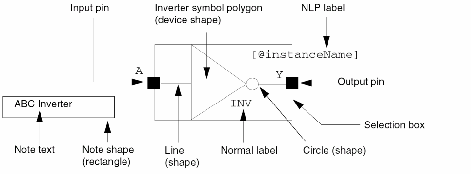
Drawing Lines
-
From the symbol window, choose Create – Shape – Line (or select Create Line from the Create toolbar).
The Add Symbol Shape form is displayed. If the form does not appear, pressF3.
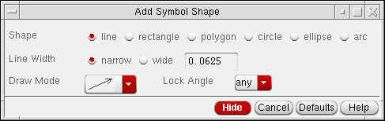 -
Select
line. - Set the options to your specifications.
-
Move the pointer into your design window.
The following example shows a line being added to a triangle shape.
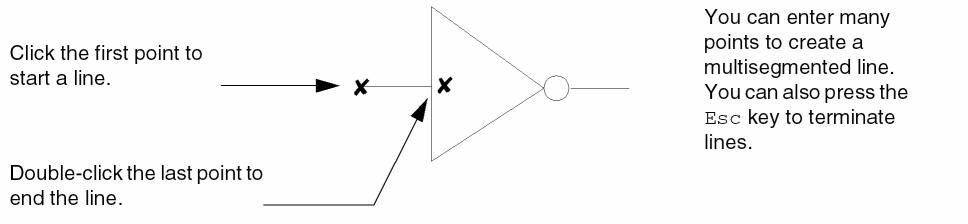
Drawing Rectangles
-
From the symbol window, choose Create – Shape – Rectangle (or select Create Rectangle from the Create toolbar).
The Add Symbol Shape form is displayed. If the form does not appear, pressF3. -
Select
rectangle. - Set the options to your specifications.
- Move the pointer into your design window and click to enter the first corner of the rectangle.
-
Click the opposite corner.
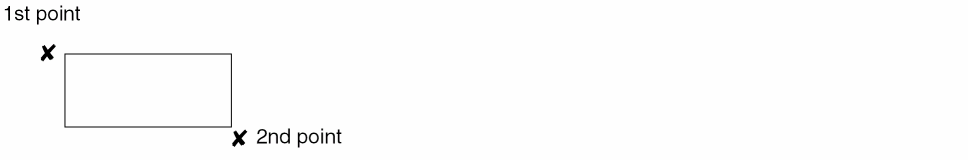
Drawing Polygons
-
From the symbol window, choose Create – Shape – Polygon (or select Create Polygon from the Create toolbar).
The Add Symbol Shape form is displayed. If the form does not appear, pressF3. -
Select
Polygon. - Set the options to your specifications.
-
Move the pointer into your design window and draw the segments that form a polygon symbol by clicking on each point.
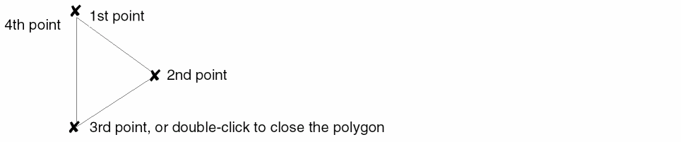
Drawing Circles
-
From the symbol window, choose Create – Shape – Circle (or select Create Circle from the Create toolbar).
The Add Symbol Shape form is displayed. If the form does not appear, pressF3. -
Select
circle. - Set the options to your specifications.
- Move the pointer into your design window, and click to specify the center of the circle.
-
Move the cursor away from the center point, and click to specify the distance of the radius and complete the circle.
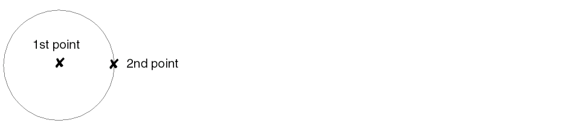
Drawing Ellipses
-
From the symbol window, choose Create – Shape – Ellipse (or select Create Ellipse from the Create toolbar).
The Add Symbol Shape form is displayed. If the form does not appear, pressF3. -
Select
ellipse. - Set the options to your specifications.
- Move the pointer into your design window and click one point to begin creation of the ellipse.
-
Click the second point to complete the ellipse.
Drawing Arcs
-
From the symbol window, choose Create – Shape – Arc (or select Create Arc from the Create toolbar).
The Add Symbol Shape form is displayed. If the form does not appear, pressF3.
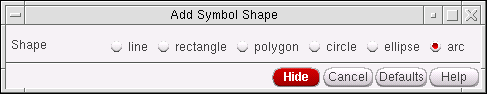 -
Select
arc. -
Move the pointer into your design window and specify three points to create an arc.
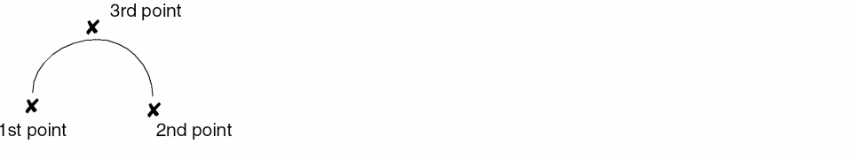
Adding Pins as Graphic Images
By default, the symbol pin that you create using the Create – Pin command in the symbol editor is a graphic image of a symbol master.
-
From the symbol window, choose Create – Pin.
The Create Pin – Symbol form appears.
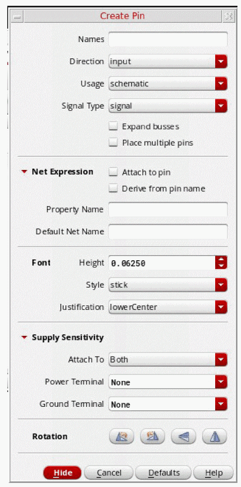 -
In the Pin Names field, type the pin names.
Use a space to separate each name. - In the Direction cyclic field, choose the pin direction.
- In the Type cyclic field, choose the pin type.
- Specify the Label Offset value (in user units) and the Label Location.
-
Optionally, click the Show Sensitivity >> button at the bottom of the form to expand the form to reveal three additional field options: Attach Sensitivity, Sensitive To Power Terminal, and Sensitive To Ground Terminal.For more information on sensitivity options see Create Pin – Symbol.
-
Move the pointer into the cellview and click to place the first pin.
The following example shows how an input pin with a pin name ofAappears after you click your mouse in the design.
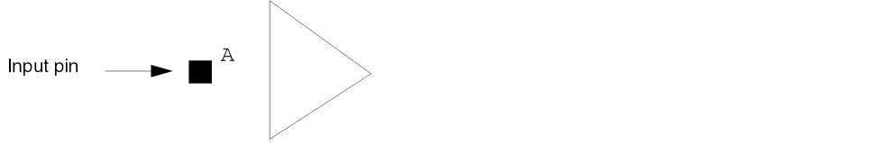 - Change the Direction cyclic field, if necessary, before placing a subsequent pin.
-
Move the pointer into the design window and click to place pin
Y.
The following example assumes you changed the pin direction.
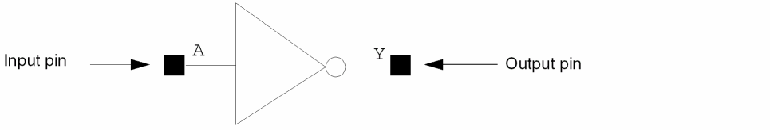
Adding Pins as Instances
When you add symbol pins as instances, any changes you make to the graphics of the symbol pin master are reflected in all the pin instances that were previously added from the symbol pin master.
To turn on the option for adding symbol pins as instances,
-
From the view, choose Options – Editor.
The Editor Options form appears.
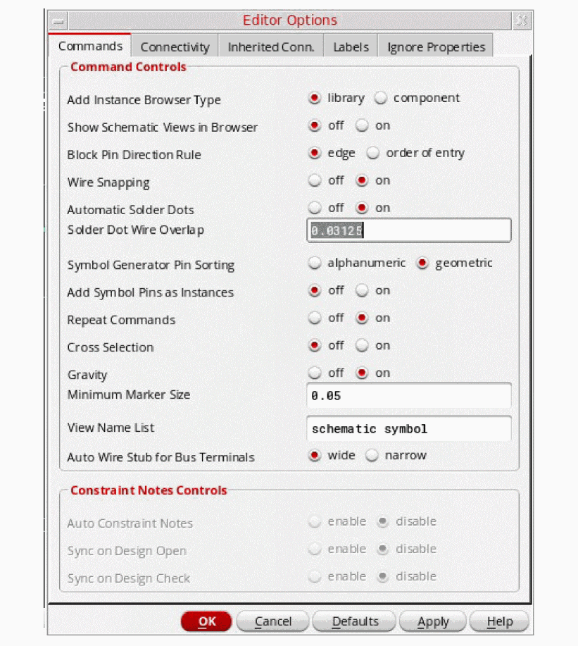 - In the Commands tab, turn on the Add Symbol Pins as Instances option.
- Click OK.
- Refer to Adding Pins as Graphic Images to create a symbol pin.
Creating Custom Pins as Graphic Images
You can use the Create – Custom Pin command to create your own graphic images (polygons) for the pins you want to place in your design.
To create and place a new custom pin,
-
From the symbol window, choose Create – Custom Pin.
The Add Custom Pin form appears.

- In the Pin Names field, type the name of the custom pin.
- In the Direction cyclic field, choose the pin direction.
- In your design window, click the first point and each subsequent point of the polygon shape that you want to create.
-
Double-click the last point to close the polygon.
The pin color is filled in and you are prompted to use the Edit Object Properties form to display the pin name. By default, the pin names are not visible. -
Press the
Esckey.
Making the Custom Pin Name Visible
To make the custom pin name visible or to edit other custom pin properties,
-
From the symbol window, choose Edit – Properties – Objects.
The Edit Object Properties form appears. -
In the design window, click the custom pin.
The Value field displays the name you gave to your custom pin. - Set the Display cyclic field to value.
- Click OK.
Adding a Selection Box
A symbol selection box defines the area of the symbol that you can use when selecting an instance of that symbol from the schematic window (it is also used in pre-selection).
-
From the symbol window, choose Create – Selection Box.
The Add Selection Box form appears.
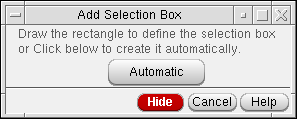 -
Draw a selection box manually, or click Automatic.
-
To draw the selection box manually, click the first corner of the rectangle, then move the cursor to the opposite corner and click.
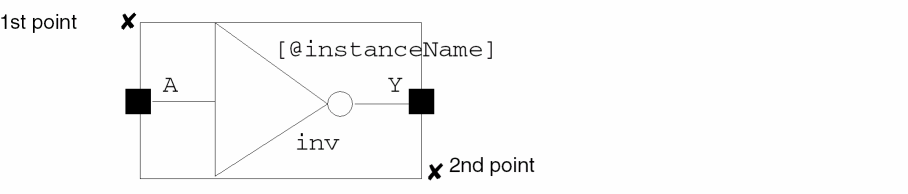 -
To draw the box automatically, click Automatic. The software generates a selection box that encloses all symbol pins and symbol shapes. You can use the Stretch command to adjust the box shape.
-
To draw the selection box manually, click the first corner of the rectangle, then move the cursor to the opposite corner and click.
Adding Labels
Symbol labels display assorted textual information. You can add one of three types of labels to your symbol:
-
Normal labels, which have fixed text
This type of label is used to identify the device and pins. -
NLP labels, which have expressions that the Virtuoso® Schematic Editor evaluates to determine the value
When you place an instance in your schematic, the system evaluates the NLP expression and displays the resulting value. For example, the system displays the NLP label[@instanceName]in the symbol window but displays a value—for example,I3—in the schematic window.
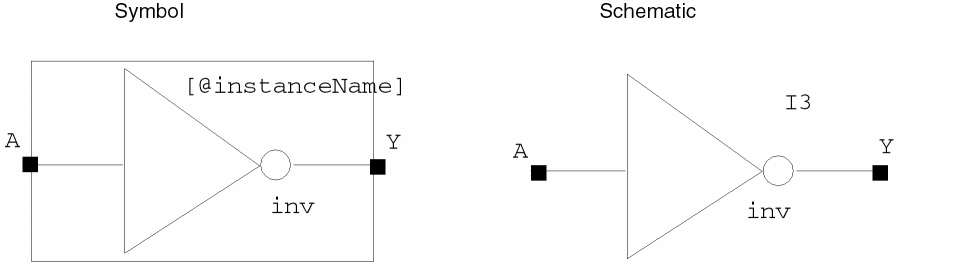 -
IL labels, which have expressions that are evaluated by the SKILL language to determine the value
When you place an instance in your schematic, the system evaluates the SKILL expression and displays the resulting value. For example, the system displays the IL labelilInst~>namein the symbol window, but displays a value—for example,I3—in the schematic window.
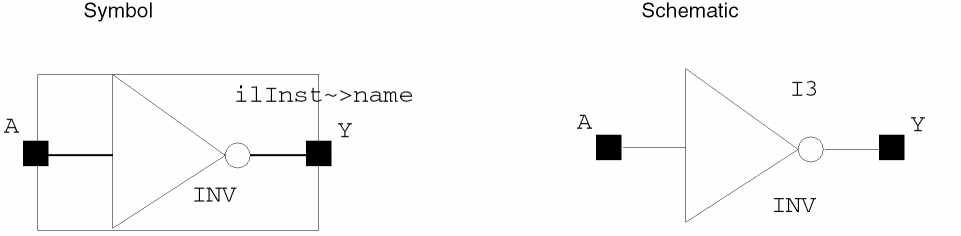
Adding a Normal Label
To add a
-
From the symbol window, choose Create – Label.
The Add Symbol Label form appears.
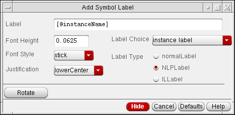 - In the Label field, type the name of your symbol.
- In the Label Choice cyclic field, choose logical label.
- In the Label Type field, click normalLabel.
-
Move the pointer into your design window.
The normalLabel expression is attached to the pointer.
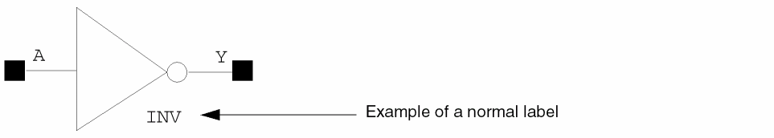 -
Click to place the label.
When you place an instance of the symbol in your design, the schematic editor displays the label text. To force an evaluation of the SKILL expression or function and display the results, use the View – Redraw command.
Adding an NLP Label
To add an
-
From the symbol window, choose Create – Label.
The Add Symbol Label form appears. - In the Label field, do one of the following:
-
In the Label Type field, click NLPLabel.
The label choice affects the color of the label. -
Move the pointer into your design window.
The NLPLabel expression is attached to the pointer.
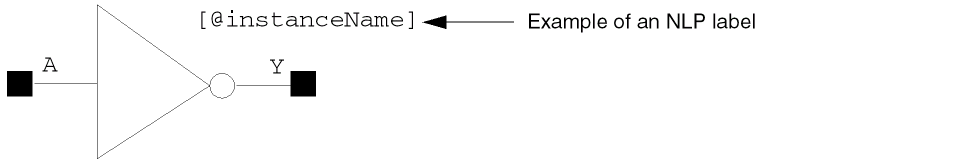 -
Click to place the label next to the symbol.
When you place an instance of a symbol in a schematic cellview, the schematic editor interprets the[@instanceName]label and displays the current value of the property. To force an evaluation of the SKILL expression or function and display the results, use the View – Redraw command.
The schematic editor evaluates NLP labels using netlisting rules.
Example – Syntax for an NLP Label Expression Containing One Property
[@propertyName :displayFormat1[:displayFormat2] ]
In the example, displayFormat1 is used when a specified property exists, and displayFormat2 (optional) is used when a specified property cannot be located.
If displayFormat2 is not defined and the property does not exist, the NLP label is not displayed.
The rules table below and the examples that follow the table show how NLP label expressions are interpreted.
Examples – Evaluating NLP Label Expressions
If the current value of a named property is defined, the schematic editor substitutes the defined value for the percent character (%) in the NLPLabel expression when you place the instance in the design.
If the schematic editor does not find a value for a property when you place an instance of a symbol, displayFormat2 is used instead.
A label expression represents the current value of a property.
-
Example 1 – Basic expressions
or[@w:%]
If you reference only one property in the NLP label expression, you specify only the name of the property. When evaluated, the schematic editor returns the value of the property. When[@w]whas a value of8, the editor generates the following label:8 -
Example 2 – Simple expressions
The schematic editor considers any nonreserved characters after the separator ([@w:w=%]:) to be a text string. When evaluated, the schematic editor returns the string. If there is a special character in the expression, it is also evaluated . Whenwhas a value of8, the following label is generated:w=8 -
Example 3 – Compound expressions
If[@w:w=%;][@l:l=%;]wis not defined andlhas a defined value of8, the following label is generated:
Ifl=8;whas a value of4andlhas a value of8, the following label is generated:
If you specify a value forw=4;l=8;wandlafter you place the instance, or if you change the value after you place the instance, the label is updated to display the current value. -
Example 4 – Combined label expressions
If[@w:w=%:w is not defined;]wis not defined, the schematic editor goes on to the next label expression,w is not defined, which is a text string. The string is evaluated as a value and the result is displayed as a label. The semicolon is part of the text string.w is not defined; -
Example 5 – Nested label expressions
The schematic editor returns the values for both properties if they are both defined. For example, if the value of[@w:w=%;[@l:l=%]]wis4and the value oflis8, the following label is generated:w=4;l=8
Adding an IL Label
To display the value of an instance property, you can add an
-
From the symbol window, choose Create – Label.
The default[@instanceName]label is attached to the cursor.
The Add Symbol Label form appears. -
In the Label field, type a SKILL expression or function, with the form
ilInst is a SKILL variable used to provide self-reference to an instance during graphic display of the cellview containing the instance. Note also the SKILL variableilInst~>master~>libNameilInstPath, which works likeilInst, but is evaluated for the instances at all display levels. You should useilInstPath, rather thanilInst, when instantiating schematics in schematics. - Set the Label Choice cyclic field to instance label.
- In the Label Type field, click ILLabel.
-
Move the pointer into your cellview and click to place the IL label.
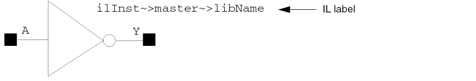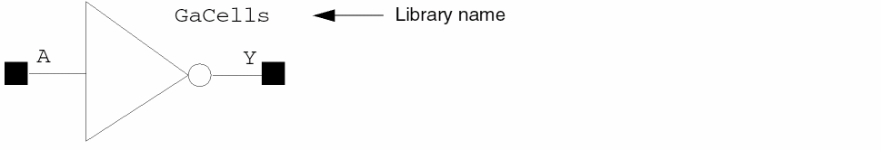ilInst~>cellView~>fileTimeStamp
The SKILL code displays a time stamp; for example,Jun 5 15:07:33 2000
Store Default of CDF Parameter
When Store Default is "Yes" for a CDF parameter of a cell, the parameter value is stored on instance of the cell when instance is created. Therefore, in this case the CDF parameter does have a default value but stored on instance. When Store Default is "No" for a CDF parameter of a cell, the parameter value is stored in Cell CDF, and not on instances of the cell in higher level schematics.
However, irrespective of the Store Default setting, if you modify paramater value on an instance, the parameter value is then stored on instance, even if the modified value is the default value.
Effect of Netlisting Mode on netSets
When the CDS_Netlisting_Mode is Analog, the property lookup includes lookup in database(OA) and CDF. For netSet properties set via CDF, the CDF property settings are used rather than those in the database.
Even if the CDF use callback’s expression evaluates to nil to specify that the parameter for a netSet is not available for display, the schematic editor intentionally ignores this setting and uses the CDF property setting specified.
IL v. NLP labels
NLP labels are used to lookup properties using database properties (note that sometimes database lookup does include CDF lookup, for more information see Effect of Netlisting Mode On Labels). IL labels are used to lookup properties using CDF properties. For example, "cdsParam(1)" ILLabel will display the value of first CDF parameter setup in Interpreted labels section of CDF.
Effect of Netlisting Mode On Labels
The effect of netlisting mode on labels is as follows:
When CDS_Netlisting_Mode is “Analog”
Property lookup includes lookup in database(OA) as well as in CDF. Therefore, if your NLPLabel/ILLabel refers to a CDF parameter, it is displayed on the instance whether it has a default value or an overriding value on the instance.
When CDS_Netlisting_Mode is “Digital”
Property lookup does not include lookup in CDF. Therefore, if your NLPLabel/ILLabel refers to a CDF parameter, and the value of the CDF parameter is not stored on an instance, the labels are not displayed on the instance.
In your CIW you can change the netlist mode:
setShellEnvVar("CDS_Netlisting_Mode=Digital")
cdsSetNetlistMode()
setShellEnvVar("CDS_Netlisting_Mode=Analog")
cdsSetNetlistMode()
NLPLabels that Display Non-default Value of CDF Parameters
NLPLabels use only database properties for lookup, however, when netlisting mode is "Analog", database lookup includes CDF lookup, and hence NLPLabel can display the value of CDF parameters. But when netlisting mode is "Digital", any NLPLabels referring to CDF parameters will not display CDF parameter value. However, when a CDF parameter value is modified on an instance, the modified value is stored on the instance where NLPLabel lookup can find it. Similarly, if a CDF parameter has Store Default value as "YES", the parameters are always stored on the instance where NLPLabel lookup can find it.
So you can create an NLPLabel which refers to a CDF parameter, such that when netlisting mode is digital, the label will display only non-default values of the parameter on instances.
-
From the CIW, select Tools – CDF – Edit to display the Edit Component CDF form.For more information on this form see the CDF Commands chapter in the Component Description Format User Guide.
- Enter the Library Name.
- Enter the Cell Name.
- Set CDF Layer to Base.
- In the Component Parameters section of the form scroll to the parameter of interest.
- Once selected, set Store Default to no.
- Click Apply.
-
Repeat steps 6-8 for all parameters that have defaults that you do not want displayed on the schematic.
- Select the instance in your schematic.
-
In the CIW enter
geQuerySelSet() -
Delete the local properties on your instance.
Additionally you will need to correctly set up your NLPlabels on your symbols. For example, the labelpl:[@pl:%:], should be set to[@pl:pl=%]. -
Set CDS_Netlisting_Mode to "Digital" as explained above.
Notice that NLPLabels on instances that have default values of CDF parameters disappear. If you modify CDF parameters on an instance now, the labels appear on that instance displaying the value of the parameter.
Adding Note Text and Note Shapes
You add note text and note shapes in the symbol window in the same way you add notes in the schematic window. Refer to Adding Note Text.
Adding a Net Expression Label
Select Create – Net Expression to add a net expression label in the symbol window in the same way you add a net expression label in the schematic window. Refer to Adding Net Expression Labels to Create an Inherited Connection.
Setting the Symbol Origin
The origin of a symbol is the (0,0) location within a symbol. When you place instances in a schematic, the symbol origin affects the position of the symbol graphics and pins relative to the instance placement point.
To set the origin of a symbol,
- From the symbol window, choose Edit – Origin.
-
Point to a location for the new origin of the symbol.
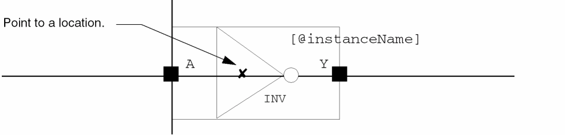Pointing to the middle of the symbol moves the symbol graphic, repositioning theX=0,Y=0origin point of the symbol to the new location.
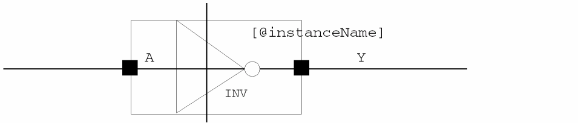 - Choose View – Fit to view the enlarged symbol, if necessary.
Creating Symbol Cellviews Using Generators
A symbol cellview is an alternative view of the schematic cellview.
- Besides using the File – Create Cellview command mentioned in Automatically Creating Cellviews you can create symbol cellviews using generators.
-
Text-to-Symbol Generator
TSG is a Cadence application program that automatically generates symbol cellviews for schematic capture and subsequent simulation processes. TSG provides a quick way to generate a symbol from a list of pins in a TSG file. -
Symbol and Simulation Library Generator
The Cadence SKILL-based symbol and simulation library generator (S/SLG) is a library management program that generates symbol and simulation views.
Return to top